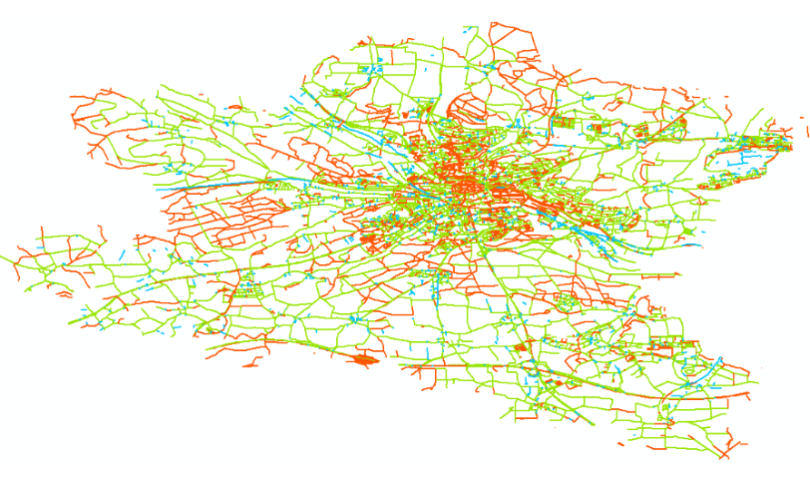

Selected Publications
|
HRGNN: Hyperbolic Graph Neural Networks with Dual-Pathway Attention for Road Network Representation Learning(in review)
J. Yang, M.J. Ouyang, Z.X. Lin, R.X. Zhu, X. Wei, K. Li, X. You GIS&RS |
|
|
MSRFormer: Road Network Representation Learning using Multiscale Feature Fusion of Heterogeneous Spatial Interactions(in press)
J. Yang*, J.H. Wu, Z.Y. Nie, et al. GSIS,2025 |
|
|
MapLayNet: Map Layout Representation Learning using Weakly Supervised Structure-aware Graph Neural Networks (accepted)
J. Yang*, C.Chen, L.F. Jia, et al. Cartography and Geographic Information Science,2025 |
|
|
News Storyline Generation using Spatial-Temporal Optimal Transport(Chinese)
[WEB]
Z.Y. Nie，F.L. Jia, J. Yang*, L. Fang, J.N. Lin, Y.L. Zhang, S.Y. Chen Journal of Geo-information Science,2025,27(6):1332-1343.https://doi.org/10.12082/dqxxkx.2025.240677 |
|
|
Road Network Pattern Recognition using Graph Representation Learning of Geometric Similarity(Chinese, in press)
Y. Hou，J. Yang*, L. Fang, B.Y. Zhang, M. Zhang, X. Xie, C.H. Zheng Journal of Geo-information Science,2024 |
|
|  |
Quality Assessment of OpenStreetMap Road Network Data Using Multisourced Data Matching and Conflation(Chinese)
J. Yang*, M. Zhang, L. Fang, F.L. Jia, G.J. Zhou, J.R. Zhang, M. Yang, Y. Hou Journal of Geomatics Science and Technology,2024,40(05):526-533. |
|
Road Network Matching using Graph Embedding via Improved Neighbor Aggregations(Chinese)
[WEB]
M. Yang, J. Yang*, Y. Hou, L. Fang, M. Zhang, B.Y. Zhang, J.R. Zhang Journal of Geo-information Science,2024 |
|
|
An Ontology-based Semantic Description Model of Ubiquitous Map Images
[WEB]
F.L. Jia, J. Yang*, L.F. Ding, G.X. Wang, G.M. Song Transactions in GIS,2024,https://doi.org/10.1111/tgis.13144 |
|
|
The Cognitive Logic and Map Construction Model of Machine Maps(Chinese)
[WEB]
F.L. Jia, J. Yang, X. You*, K. Li, J.P. Tian, S.L. Zheng National Remote Sensing Bulletin,2023 |
|
|
Spatiotemporal Analysis of Bike Mobility Chain: A New Perspective on Mobility Pattern Discovery in Urban Bike-Sharing System
[WEB]
R. Xin*, J. Yang*, B. Ai, L.F. Ding, T.T. Li, R.X. Zhu Journal of Transport Geography.2023,Vol109-103606,DOI:10.1016/j.jtrangeo.2023.103606 |
|
|
The Machine Map and its Conceptual Model(Chinese)
[WEB]
X. You, F. Jia*, J. Tian, J. Yang, K. Li Journal of Geo-information Science,2023 |
Patent
Function Recognition of Check-in Hotspot using Semantic Clustering(Application No. 202110343078.3)
J. Yang, P. Wang, F. Jia, G. Wang
2021 March
A Trajectory Adjustment Method using Graph-based Indoor Location Model(Application No. 202111026996.X)
J. Yang, L. Jiao, X. You, F. Jia, X. Xie, J. Bai
2021 Sept
Talks
MapLayNet: Map Layout Representation Learning using Weakly Supervised Structure-aware Graph Neural Networks
J. Yang, X. Xie
The 1st AsiaCarto, 2024.12.8, HongKong, China.
From Pan-Info Map to AI-based GeoScene Simulation(Chinese)
J. Yang
Database Research Group, National University of Defense Technology, 2024.11.29, Changsha, China.
Spatial Intelligence for the R&D Transformation of Surveying and Mapping(Chinese)
J. Yang
Database Research Group, National University of Defense Technology, 2024.11.27, Changsha, China.
On GNN's Expressive Power of Road Network Strucutres(Chinese)
J. Yang
SpatialDI-Spaital Data Intelligence, 2024.4.27, Nanjing, China.
Quality Assessment of OSM Road Networks using Multisourced Data Matching and Fusion(Chinese)
J. Yang
The 4th Industrial Big Data Forum, 2023.5.18-19, Beijing, China.
Isovist-based Empirical Study on Spatial Cogniton of Indoor Architectural Strcutures(Chinese)
J. Yang
Conference on Virtual Geographic Envrionment, 2022.7.26, Ganzhou, China.
Parsing Ubiquitous Map Images: Progress and Prospect(Chinese)
J. Yang
Nanjing Normal University, 2022.6.15, Tecent Meeting.